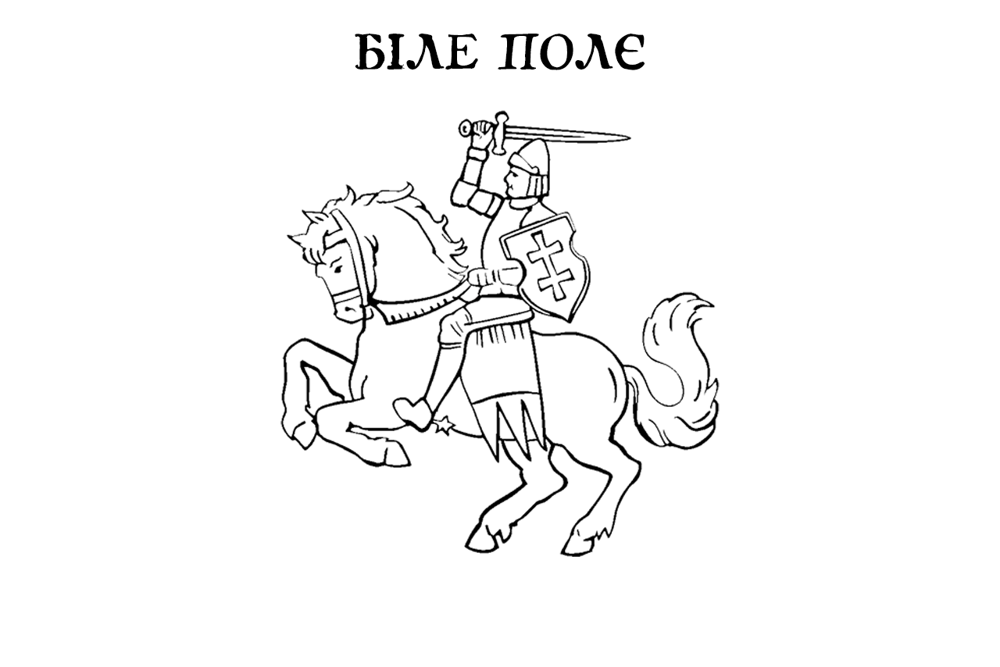

Продовження славних традицій Гетьманства та Князівства Північного Підв'язнова
| Головна | Статут | Ген. Старшина | Укази Гетьмана | Зв'язок |
Символіка

Наш Стяг Зв'язокПишіть нам на: |
Вітаємо!Цей веб-ресурс присвячений втіленню творчого та ідеологічного проєкту **Держава Біле Поле**, що постала як осередок збереження українських традицій, мови та Гетьманського державного ладу. Про Наші ОсновиМи твердо стоїмо на демократичних принципах, але зберігаємо Гетьманство як символ нашої історії та незламності. Наша мета — підтримка української справи та рішуче засудження фашистської росії. |